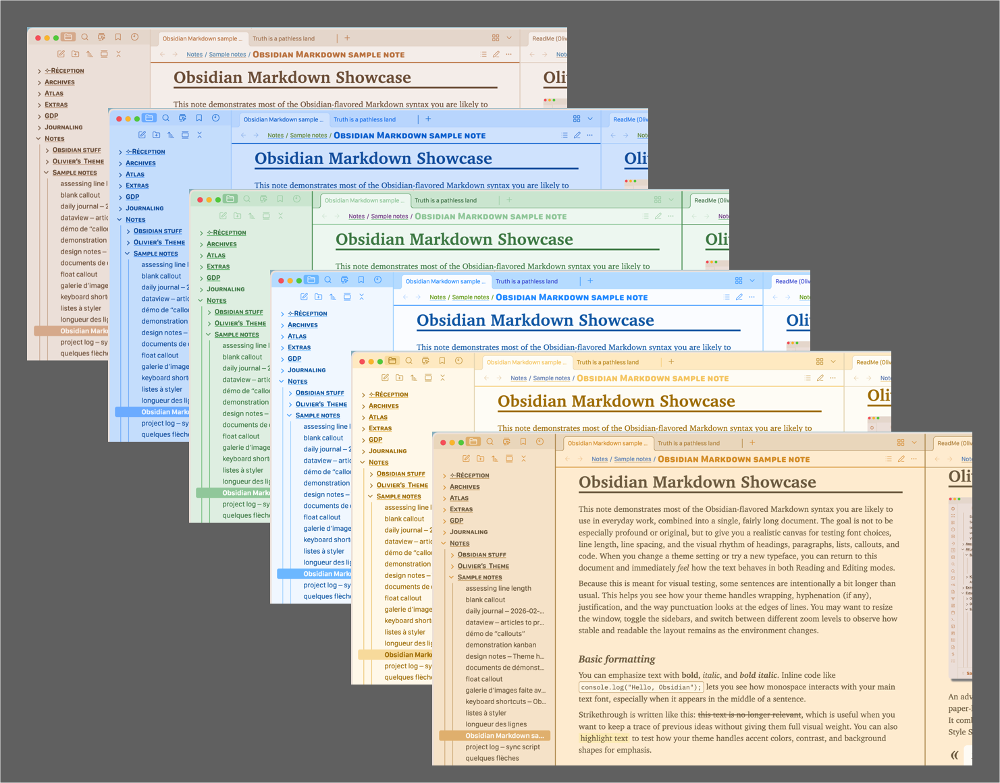
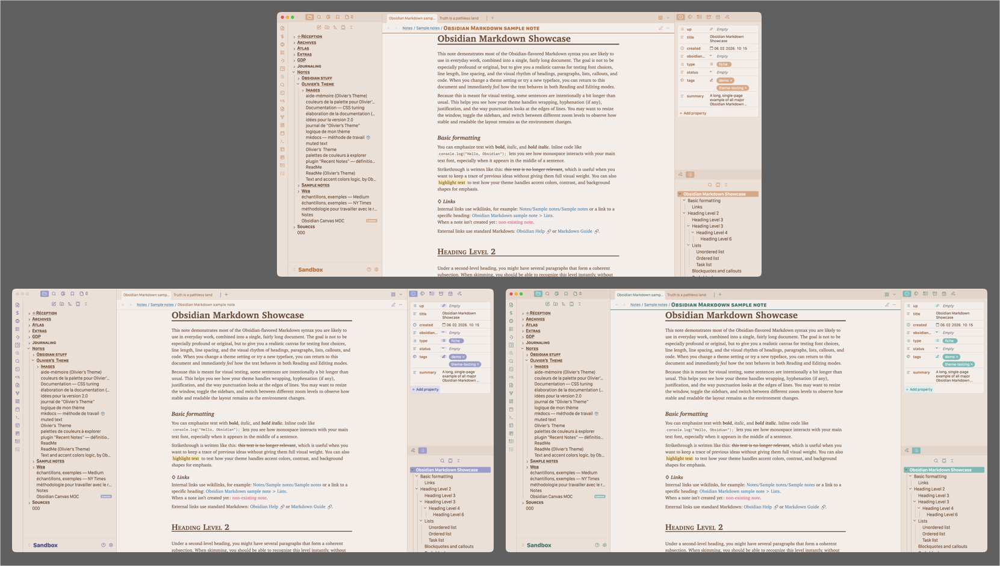
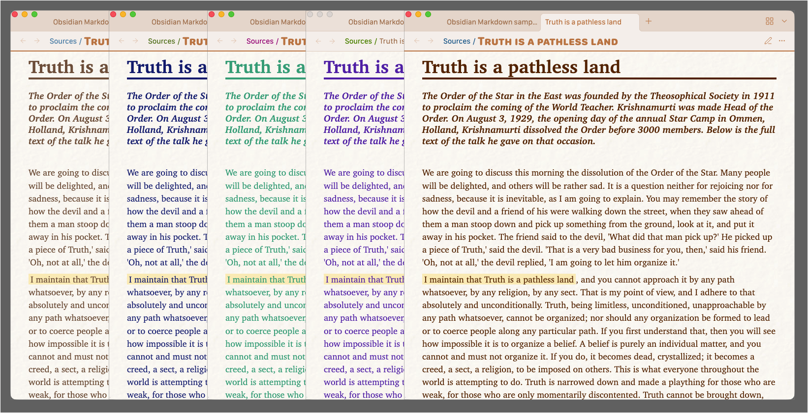
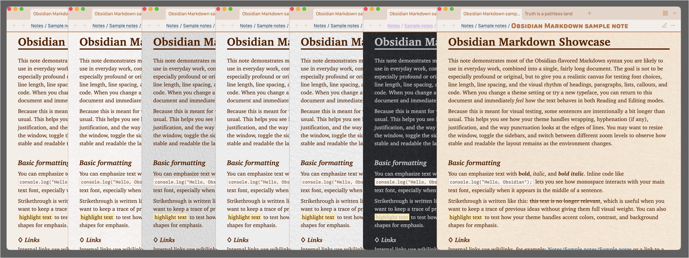
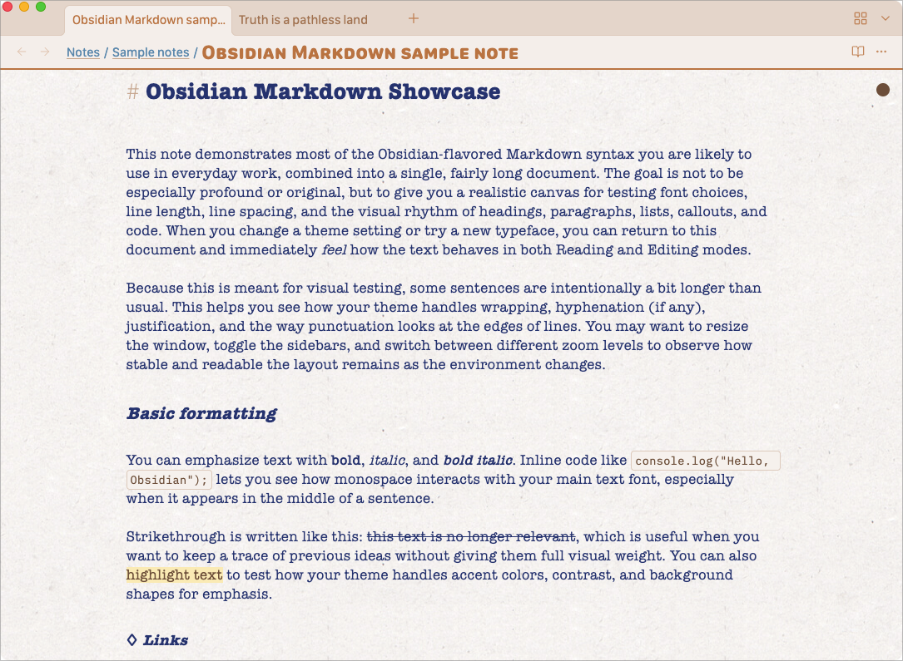
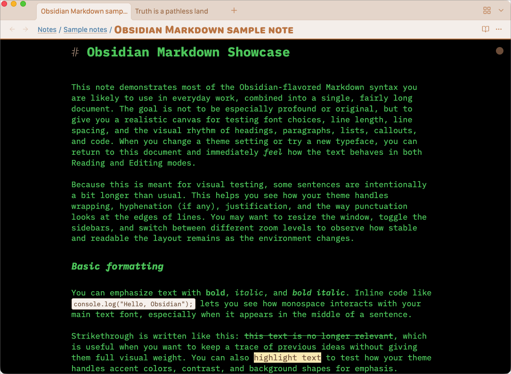

Light and Dark mode colors¶
This section explains how Olivier’s Theme handles Light and Dark colors, and how a few high‑level choices can restyle your vault thanks to a cascading logic.
If you mainly want to “make Obsidian look nice” without touching typography, this is the place to start.

Light mode colors¶
General palette (Light)¶
The General palette is the main lever for the overall atmosphere of your vault in Light mode.
Choosing a palette here automatically sets a coordinated accent, text colors, backgrounds and highlight color for Light mode, and also chooses a related Dark palette.
As long as you leave the other Light mode color options on Default, this single choice is enough to give your vault a coherent look.
Typical use:
- Open Style Settings → Olivier’s Theme → LIGHT MODE colors → General palette.
- Pick a palette that matches your taste (for example Beige, Icy, Paradiso, etc.).
- Keep the rest on Default for now.
Later, you can override specific elements (accent, text color, backgrounds, highlighting) without breaking the underlying harmony.

Accent color (Light)¶
The accent color is used for interactive elements: buttons, tabs, hover states, active items, and so on.
For each Light palette, you can choose:
- Coordinated – an accent that blends harmoniously with the General palette.
- Alternative 1 and Alternative 2 – related colors (often split‑complementary or triadic) that change the mood while staying in the same color “family”.
If you are unsure, start with Coordinated. Switch to an alternative when you want a slightly stronger, cooler or warmer contrast without redesigning everything.

Body text color in Reading mode (Light)¶
This option sets the text color for Reading mode when Obsidian is in Light theme.
- Default – a carefully chosen color that fits the current General palette.
- Other options – a range of ink‑inspired colors (dark blues, browns, greens, reds, etc.) for more personality.
Combining a subtle ink color with a paper background can create very pleasant “fountain‑pen on paper” moods. Here are some examples :

If you change this color, the Writing / Editing text color follows it (when set to Default), unless you customize it separately.
N. B. : You’ll notice that most texts in the sidebars follow this choice, the files navigation included.
Notes background in Reading mode (Light)¶
This controls the background behind your notes in Reading mode (Light theme).
You can:
- choose None, which uses a plain background color derived from the General palette, or
- select one of several paper backgrounds: light papers, tinted papers, brown paper, etc.
Plain backgrounds work well for dense, technical notes. Paper backgrounds are often ideal for journaling, long‑form reading or psychotherapy notes.

Paper background also in Live Preview (Light)¶
Live Preview is the default editing mode for many users.
This toggle decides whether the paper background is also used in Live Preview:
- OFF – Reading uses the chosen paper (or plain) background; Live Preview uses a plain editing background. This makes the difference between Reading and Writing visually obvious.
- ON – both Reading and Live Preview share the same paper background, for a very consistent “paper notebook” look.
Whatever you choose, a small indicator in the upper‑right corner the pane indicates the Writing/Editing mode is ON.
Here’s an example of a pane with a typewriter font (American Typewriter), a blue “ribbon” writing on white paper — clearly, a writing mood :

Text color in Writing / Editing mode (Light)¶
This option sets the ink color while editing in Light mode.
- Default – follows the Reading text color you chose above.
- Custom choices – the same palette of ink‑like colors, if you want a distinct color only for Writing.
Typical reasons to diverge:
- to make Reading vs Writing immediately distinguishable,
- simply for variety and personal preference.
Notes background in Writing / Editing mode (Light)¶
Here you choose the background of the note while editing in Light mode.
On Default, it uses the background derived from the General palette.
If you want to emphasise the difference between Reading and Writing, pick another background:
- a very light tint (ivory, grey, light green, etc.),
- or a slightly more saturated choice if you like strong visual cues.
This affects Live Preview and Source views.
An example of what can be easily achieved : an 80s CRT mood (IBM Plex Mono, Terminal Green on black background):

Text selection takes accent color (Light)¶
When this switch is ON, text selections in Light mode use a tinted version of the accent color.
This keeps selections clearly visible while staying in tune with your chosen palette.
When it is OFF, selections use a more neutral highlight that is still easy to see but less colorful.
Choose the behaviour that feels the least distracting for you.
Highlighting color (Light)¶
This option controls the color used for explicit highlights (for example with ==highlighted text==) in Light mode.
The default value is:
- harmonious with the Light General palette, and
- inspired by real‑world Stabilo markers.
If you want your highlights to be more striking or to match a specific coding system, you can select another color here (light vs strong, and several hues).
Color of the pills inside the Properties panel (Light)¶
This setting defines how pills and tags look in Light mode:
- pills in the Properties panel,
- inline tags in your notes.
You can choose whether they:
- blend softly into the theme,
- stand out clearly, or
- follow the general accent color.
If you rely heavily on tags and metadata, it is worth trying a few options to find the right level of prominence.
Dark mode colors¶
The Dark mode section mirrors the Light mode options.
You can use it in a very simple way or design a separate Dark personality.
General palette (Dark)¶
The General palette (Dark) controls the overall mood when Obsidian is in Dark theme.
You have two main approaches:
- Default < light mode – the Dark palette is automatically derived from the chosen Light palette. This keeps a strong relationship between the two modes and is usually the best starting point.
- Explicit Dark palette – select a specific Dark palette from the list when you want a very different night mood (for example a cooler, more contrasty Dark theme while keeping a warm Light theme).
Some Dark palettes do not have a Light equivalent (for example LYT or Victorian); those must be chosen explicitly in Dark mode.
Once a Dark General palette is chosen, it propagates just like in Light mode:
- Reading background and text color,
- Writing / Editing background and text color (when left on Default),
- accent variations,
- highlighting colors.
If you keep the rest on Default, you can switch the entire Dark atmosphere with this single setting.
Accent color (Dark)¶
The Accent color (Dark) option works exactly like in Light mode, but with values tuned for Dark backgrounds.
Again, you can choose:
- Coordinated – fits the Dark General palette,
- Alternative 1 / Alternative 2 – stronger or more contrasted accents.
If you want Light and Dark to share the same “accent personality”, keep both on Coordinated.
If you want Dark to feel a little more vivid, try an alternative here.
Text color in Reading mode (Dark)¶
This sets the Reading text color while Dark theme is active.
The same idea applies:
- Default – a text color chosen to work well with both the Dark palette and background.
- Other options – a selection of colors (terminal greens, cyans, blues, etc.) for specific atmospheres.
You might, for example, choose a calm light beige for prose, or a terminal‑green look for technical notes.
Notes background in Reading mode (Dark)¶
This controls the Reading background in Dark mode:
- keep the default dark background derived from the palette, or
- pick one of the dark paper backgrounds for a more tactile, less “screen‑like” feel.
Dark paper can make long reading sessions at night feel softer and less glaring.
Paper background also in Live Preview (Dark)¶
If you have chosen a paper background for Reading mode, this toggle defines whether this paper background is also used in Live Preview.
- OFF – Live Preview always uses a plain editing background.
- ON – the paper background chosen for Reading mode is also used in Live Preview.
Again, there is an indicator in the top‑right corner of the pane signalling Editing mode.
Text color in Writing / Editing mode (Dark)¶
This sets the ink color while editing in Dark mode.
On Default, it follows the Dark Reading text color.
You can select a different color if you like a more vivid ink for Writing (for example bright cyan on a very dark background) while keeping Reading calmer.
Notes background in Writing / Editing mode (Dark)¶
Here you choose the Editing background in Dark theme.
The default is coordinated with the Dark General palette.
If you want a more pronounced contrast between Reading and Writing, choose a slightly lighter or darker background just for editing.
Text selection takes accent color (Dark)¶
Same behaviour as in Light mode:
- ON – selections use a tint of the Dark accent color.
- OFF – selections use a more neutral highlight suitable for Dark backgrounds.
This is purely a matter of preference; choose what makes selections easy to spot without pulling your eye away from the text.
Highlighting color (Dark)¶
Controls the highlight color for ==highlighted text== in Dark mode.
Each Dark palette has default highlight colors that remain readable over dark backgrounds.
You can still choose between lighter or stronger variants and several hues, depending on how prominent you want highlights to be.
Color of the pills inside the Properties panel (Dark)¶
As in Light mode, this option defines the pills and tags colors in Dark theme.
You can match:
- the Dark accent color,
- the main text color, or
- a theme‑tinted background.
For users who work mainly in Dark mode with many tags and metadata, this setting has a big impact on overall readability and noise level.
A simple way to think about it¶
- Let the Light General palette define the daytime personality of your vault.
- Let the Dark General palette either follow that choice (
Default < light mode) or become a separate night personality. - Keep most other color options on Default until something feels off, then override only what you need.
This way you keep the cascade working for you, instead of fighting dozens of independent color knobs.